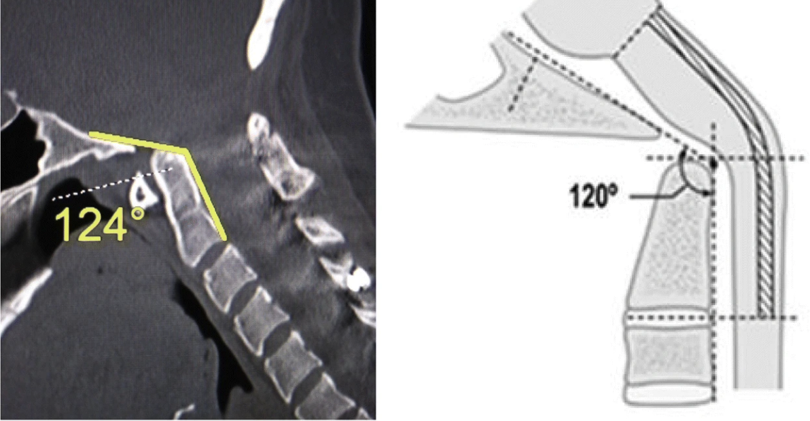
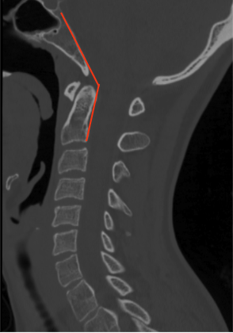

Adapted from: Henderson FC Sr, Francomano CA, Koby M, et al. Cervical medullary syndrome secondary to craniocervical instability and ventral brainstem compression in hereditary hypermobility connective tissue disorders: 5-year follow-up after craniocervical reduction, fusion, and stabilization. Neurosurg Rev. 2019 Dec;42(4):915-936. doi: 10.1007/s10143-018-01070-4.

Adapted from: Thibodeau R, Normal CT cervical spine. Case study, Radiopaedia.org (Accessed on 28 Dec 2025) https://doi.org/10.53347/rID-183532
1) Description of Measurement
The clivo-axial angle (CXA) is a sagittal craniocervical measurement that quantifies the angular relationship between the clivus (posterior skull base) and the axis (C2). It reflects the degree of ventral kinking or kyphotic angulation of the cervicomedullary junction.
A decreased CXA indicates abnormal craniovertebral alignment and is associated with ventral brainstem compression, traction injury, and cervicomedullary deformity in conditions such as basilar invagination, craniocervical instability, trauma, rheumatoid disease, and connective tissue disorders.
2) Instructions to Measure
3) Normal vs. Pathologic Ranges
Key points:
4) Important References
Henderson FC Sr, Henderson FC Jr, Wilson WA 4th, Mark AS, Koby M. Utility of the clivo-axial angle in assessing brainstem deformity: pilot study and literature review. Neurosurg Rev. 2018 Jan;41(1):149-163. doi: 10.1007/s10143-017-0830-3.
Henderson FC Sr, Francomano CA, Koby M, Tuchman K, Adcock J, Patel S. Cervical medullary syndrome secondary to craniocervical instability and ventral brainstem compression in hereditary hypermobility connective tissue disorders: 5-year follow-up after craniocervical reduction, fusion, and stabilization. Neurosurg Rev. 2019 Dec;42(4):915-936. doi: 10.1007/s10143-018-01070-4.
Smoker WR. Craniovertebral junction: normal anatomy, craniometry, and congenital anomalies. Radiographics. 1994 Mar;14(2):255-77. doi: 10.1148/radiographics.14.2.8190952.
Menezes AH. Craniovertebral junction anomalies: diagnosis and management. Semin Pediatr Neurol. 1997 Sep;4(3):209-23. doi: 10.1016/s1071-9091(97)80038-1.
Goel A, Dhar A, Shah A, Rai S, Bakale N, Vaja T. Revision for Failed Craniovertebral Junction Stabilization: A Report of 30 Treated Cases. World Neurosurg. 2019 Jul;127:e856-e863. doi: 10.1016/j.wneu.2019.03.286.
5) Other info....
CXA should be interpreted in conjunction with:
Abnormal CXA is seen in:
When CXA is < 125°, MRI is recommended to assess:
Surgical realignment that restores CXA toward normal values is associated with improved neurologic outcomes in selected patients.